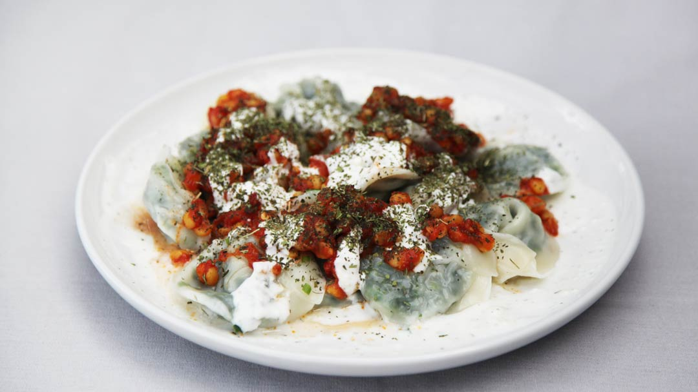

Ashak Recipe
History:
Ashak is a traditional Afghan dish. It is usually eaten during special events such as parties or weddings because it is expensive and also time consuming to make. Afghan cuisines have elements from different places such as mint from Iran, dumplings and noodles from Uzbekistan. They are filled with gandana which is a type of leek grown in Afghanistan. It is usually served with heated oil poured all over the platter, chaka which is a thicker yogurt, ghooroshte lape or otherwise, lentils, cilantro and crushed dry mint to top everything off. Another food that is similar to ashak is mantu, however, instead of being stuffed with just greens, it is stuffed with meat.
This recipe is the recipe my mom has used for years to make ashak for me and my brother. She has perfected it over the years, measurements for the ingredients will be for the serving of two people; multiply, if necessary.
Ingredients:
- Spinach-1 bunch
- Green onion-1 bunch
- Gandana-1 bunch
- Salt-1/4 teaspoon
- Black pepper-1/4 teaspoon
- Oil-1/4 cup
- Circular shaped dumpling dough, this can be found at any Chinese grocery store
Instructions:
- Finely cut the sinach, green onion, and gandana
- Wash all greens, and let it sit to dry for a little
- Mix the greens together and add, salt, black pepper, and oil to the mixture. Mix until evenly distributed
- Take a slice of dough and outline it with water, we do this to make sure when we enclose the stuffing, it stays inside and does not leak when boiled
- Take a table spoon of the mixture and place it in the center of the dough
- Enclose the circle so that it makes a semi cicle, make sure to press the dough well into each other
- While doing step 5 and 6, fill a large pot with water, add 3 table spoons of salt, and bring the water to a boil
- Put the dumplings inside the pot, and let it boil for 2-3 minutes
Toppings
- Chaka or yogurt
- Lentiks
- Cilantro
- Heated oil
- Crushed dry mint

Reference List Entry
Taste Atlas
Ashak Recipe
Image Source